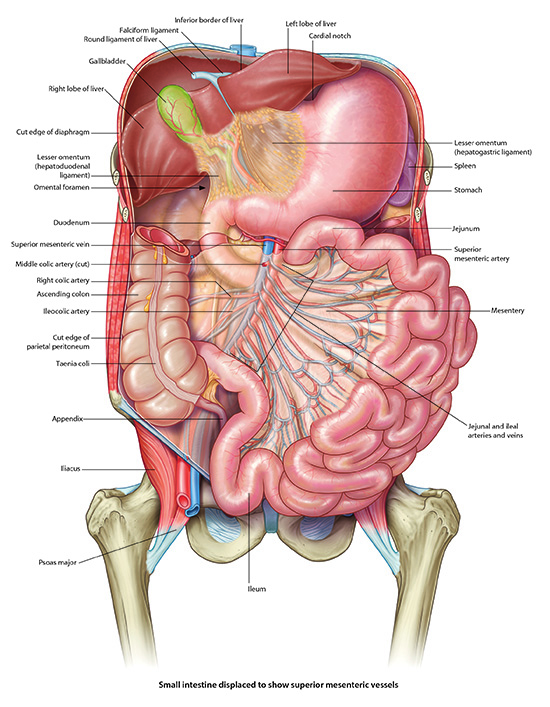

Abdominal Cavity In Situ: Lab 5 - Page 2 of 6
Why does the lesser omental sac exist? |
|
|
It forms as part of the rotation of the foregut. See the embryology lecture and film. |
|
Add in major organs one by one
| Add the spleen. Hint: You may need to rotate the cadaver to see under the diaphragm. | |
| Add the stomach. | |
| Add the liver. |
What is the arterial supply for the organs (#5 to #7) listed above? |
|
|
The celiac trunk. |
|
| Add the duodenal-jejunal flexure. |
What is the significance of this landmark? |
|
|
This is where the small bowel transitions from retroperitoneal to intraperitoneal. |
|